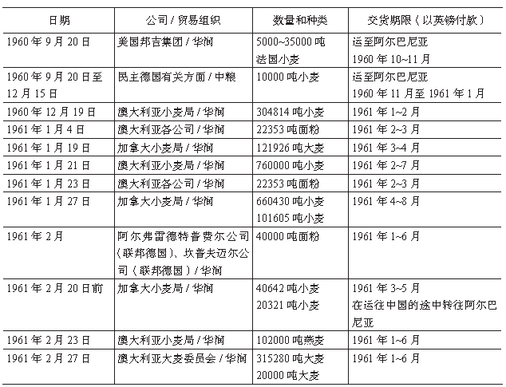

1960年秋至1961年5月中国自加拿大和澳大利亚的粮食进口
1960年秋至1961年5月中国自加拿大和澳大利亚的粮食进口
新中国成立后，为稳定和保障国内粮食供应，曾采取过“以出养进”的粮食贸易策略，即高价出口高等级大米以进口相对廉价的小麦。早在1954年，中国就曾试购过约2000吨（按每蒲式耳小麦标定重量27.216千克计，此数约合73486.2蒲式耳，以1954年上半年美国小麦远期合约均价2美元/蒲式耳折算，计146972.4美元。）的加拿大小麦。［1］在外方资料中，到1958年第二次出现中国进口加拿大农产品（其中大部分为小麦）的记录时，其金额已经攀升至700万美元。［2］根据澳大利亚的资料显示，1957∼1958财政年度，中国自澳大利亚进口了价值5.2万英镑的小麦；1958∼1959财政年度相应的数字则为23.3万英镑。［3］中方记录则显示，中国于1958年自加拿大进口了3800万蒲式耳（约合10.27万吨）小麦。［4］同时，1957∼1958农业年度的世界粮食生产的总体情况是：澳大利亚的收成情况较差，被迫进口加拿大小麦以满足其国内需求；但法国的麦收情况很好，同时加拿大和美国的粮食剩余也累积到了创纪录的新高峰。［5］加拿大政府迫切希望缓解粮食积压问题，以期得到其西北各省农场主及其协会的谅解与支持。而在经历了20世纪50年代上半期的连续贸易赤字之后，澳大利亚对华出口也开始重新取得较为明显的增长，恢复了对华贸易出超的有利地位。［6］由于“大跃进”运动，1959年度和1960年度的中加、中澳农产品贸易再次中断，但可以据前述情况得出较为明确的判断，即中加、中澳之间的粮食贸易自有其历史渊源和现实的推动力。
一、中国与加拿大、澳大利亚的粮食贸易
（一）中国打通从加拿大、澳大利亚进口粮食的渠道与加澳攻守同盟的形成
1960年下半年，中国国内粮食供应形势异常严峻。9月，华润公司（以下简称华润）接到中国对外贸易部的指示，开始与加拿大小麦局、澳大利亚小麦局、法国路易达孚公司、美国邦吉集团（在与邦吉集团的接洽过程中，该公司表示仅可通过该公司设在巴黎的分支机构绕过美国监管，向中方出口少量非美国所产的粮食。同时，邦吉集团建议中方尝试接洽嘉吉集团，因为嘉吉集团在加拿大有众多的分支机构和庞大的业务量，便于提供掩护。）、澳大利亚悉尼戈林戈伊公司等各方进行接触，准备进口小麦。中方在接触中询问了相关国家粮食的可售量、质量、种类及价格，这在西方国家各粮食贸易公司之间引发了竞争。［7］1960年和1961年，由于中东地区发生了旱灾，法国和苏联向该地区输出了部分粮食，导致法、苏两国国内的粮食库存有所下降，这使美、加、澳三国成为中国可能的粮食进口来源国。囿于意识形态和贸易封锁禁运因素的影响，中国直接从美国进口粮食显得困难重重。同时，对华持友好态度的美国嘉吉集团的小约翰·H·麦克米兰于1960年12月23日去世。［8］通过该公司设在美国以外地区的分支机构进口美国粮食的意向也被迫搁浅。短时间内有可能向中国直接输出大量粮食的就只剩下加、澳两国。
至1960年底，中国的粮食供应情况越发紧张。11月29日，李先念给毛泽东、周恩来等写信，“正式提出进口粮食的建议。此前，陈云曾向粮食部提出进口粮食的意见。”此时，对于粮食进口的目的和数量的估计尚不成熟。李先念在信中尚认为进口粮食是因为“面临着明年春荒的困难”，而“克服这个临时困难的办法，除中央一系列方针政策之外，考虑进口12亿斤粮食或更多一些的粮食是必要的”。此件由周恩来于12月5日批复为“已告先念同志照办”，并转毛泽东，毛泽东于12月12日批复为“退先念同志。完全同意。能进口二十亿斤，更好”。［9］华润同澳大利亚小麦局关于进口粮食的谈判随即于12月15日开始。负责谈判总体事宜的丁克坚于12月17日赴香港，要求立即大量进口澳大利亚小麦，澳方最终同意以折扣价出售所谓“平均优良品质”（自1891年至1905年，澳大利亚各州均陆续采用了同一种小麦评级体系（即“平均优良品质”体系）。在该体系下，澳大利亚各州商会将首先进行本年度小麦收成的样本池抽样并加以混合，随后确定一份以英制单位计量的小麦样品（其中已除去了质量较差的样品）。“平均优良品质”体系受到了很多批评，因为这种体系的评级每年都会变动。该体系更多表现出的是小麦的重量及其用于制作面粉的原物料价，而非其用于烘焙食品的最终消费价格。G. Whitwell & D. Sydenham, A Shared Harvest: The Australian Wheat Industry 1939∼1989, Melbourne: Macmillan Education Australia Ltd, 1991, p. 104; A.R. Callaghan & A.J. Millington, The Wheat Industry in Australia, Sydney: Angus & Robertson Press, 1965, pp. 349∼363.）的小麦并且接受中方以英镑现汇付款的条件。至此，中国初步打通了从澳大利亚大批量进口粮食的渠道。
但仅从澳大利亚进口粮食尚不足以完成前述100万吨粮食的进口计划，加之该进口计划的目标已于12月底提高至150万吨，［10］为此，中国将进一步寻求粮食进口的目光转向加拿大。1961年1月3日，在加拿大温尼伯访问的华润代表表达了希望进口加拿大小麦和大麦的意向。［11］中方希望使拟议中的中加粮食贸易协议在最为广阔的范围内为外界所知，以便通过国家间的贸易竞争，从加拿大粮食种植者与贸易商联合游说团体处获得对于该协议的支持。因此，中方提议在温尼伯展开一些先期的事务性谈判。为向加方强调其必须与澳大利亚小麦局在中国的粮食市场上展开竞争，华润还于次日在香港签署了一份进口澳大利亚面粉的合同。然而，就在加拿大小麦局与华润于温尼伯举行谈判前，1961年1月17日，美国农业部农产品信贷公司向加拿大小麦局首席专员W·C·麦克纳马拉传达消息称，该机构希望中加粮食谈判取得成功，并且希望这种成功能使美方将来也能参与到这种贸易当中。［12］麦克纳马拉据此认为美国政府也在考虑向中国出口粮食。因此，对于加拿大小麦局而言，关键是要抢在美国之前与华润达成协议。两天后，加拿大小麦局同意向中国出售大麦。中国又开拓了从加拿大大批量进口粮食的新来源。
1960年底至次年2月末，中国按国际通行的现汇贸易方式向加、澳等国订购了大量粮食（见下页表）。澳方注意到，中国的贸易行为等发生了显著转换，同时，中国对外贸易的国别分布情况也发生了较大变动。而且，中国对社会主义阵营国家的贸易中有很多是无偿援助或半无偿的性质，货币价格仅为定价后的估算值，若将其扣除，中国对资本主义国家和地区的贸易额几乎与中国对社会主义阵营的贸易额等量齐观。据此，澳方开始担忧中国贸易的可持续性及国际支付能力等问题。澳大利亚小麦局主席蒂斯代尔尤其忧虑“此类贸易将使澳大利亚过于依赖中国（的小麦市场）”、“中国在缺乏覆盖风险所需的保险的情况下履行其承诺的能力有不确定性”。［3］（pp.285∼288）毕竟，以现汇对华出口粮食是一回事，在卖方信贷的基础上对华出口粮食又是另一回事。1961年3月底至4月初，澳大利亚小麦局和加拿大小麦局的官员们通过外交电报密集交换了意见。为了防止中方利用两局都推销剩余粮食而争取于中方有利的贸易条款，他们考虑为加、澳两国的对华粮食出口设立信贷限制；双方还同意，此后一旦两国的信贷政策有任何变动，都会通知对方。［13］
值得注意的是，加拿大小麦局和澳大利亚小麦局都属于半官方的粮食贸易促进组织，只是在执行委员会人员的构成中，存在现任和退任政府官员兼职的情况。但这两个半官方机构的举动在多大程度上代表了其政府的立场和意志，则需加以区分。就两国政府所采取的姿态而言，双方尚存在一定程度的分歧和立场差异。以时任加拿大农业部部长阿尔文·汉密尔顿为首的一批官员和国会议员希望引起外界对于加拿大政府在加中粮食贸易中所扮演的角色的注意；他们同时认为，对华出口剩余粮食将有助于缩小加拿大不同地区间的经济发展差异和弥补农场主同居住在工业中心城市的居民之间的巨大收入差距。汉密尔顿本人也比较热心于向加拿大政府争取对华粮食出口贷款。而澳大利亚政府虽然也倾向于将其国内过剩粮食出口给中国，却同时又试图公开表明澳大利亚政府与澳中之间的这种贸易保持了相当距离，其原因要归结于当时澳大利亚国内外的政治状况。当时的澳大利亚政府依赖澳大利亚民主工党的支持，而澳大利亚民主工党采取右翼政治立场，反对同“红色国家”进行交易。因此，澳大利亚政府强调，其小麦局是一个自治的推销组织，而政府对于该组织没有控制力。但由于以卖方信贷为基础的小麦出口已经涉及澳大利亚的国家利益，在实际贸易操作中，“澳大利亚小麦局在做出出口决定前，都一定要向澳大利亚政府报备”。［3］（p.288）澳大利亚政府这种自表中立的说辞其说服力是很有限的。
1960年9月20日至1961年2月27日中国和各国现汇粮食合同表

资料来源：Chad J. Mitcham, China’s Economic Relations With the West and Japan, 1949∼79 : Grain, Trade and Diplomacy, p.53.
（二）中国争取有利贸易条件与加澳攻守同盟的破裂
1960年9月至1961年2月底，中国的粮食进口活动绝大多数是以现汇进行支付的。这给国家的外汇收支平衡带来极大压力。“怎样才能做到既进口粮食和其他必不可少的物资，又做到外汇收支大体平衡，这就是一九六一年对外贸易面临的主要问题。”［14］同时，鉴于日益严峻的国内粮食供应形势，1961年2月，中共中央批准了财贸办公室《关于一九六一年对外贸易若干问题的请示报告》，决定降低中国的对外农产品出口并确保“吃饭第一、稳定国内市场”。［14］（p.242）此举进一步削弱了中国通过米麦套利交易“以出养进”取得粮食进出口差额的能力。对此，中央提出的解决办法是：在削减除粮食以外各项原物料进口总额的同时，出口81万两黄金和700万匹布；对于仍然存在的贸易逆差部分，则一方面通过“在对外贸易工作中争取多进口一些原料加工成品，向资本主义国家出口，赚取外汇；另一方面，可以在进口粮食谈判中争取做到一部分粮食延期付款和分期付款”的办法来解决。［14］（p.245）所以，中国在同澳大利亚的谈判中表示，尽管在使用外汇和黄金储备进口粮食的问题上中方存在困难，中方却仍将通过出口纺织品、大米、大豆等来保障进口粮食所需的国际支付能力。华润在香港向澳方提议“此类交易应由为期6个月至12个月的贷款来提供短期融资”，但澳方却并不热心，从而在实质上拒绝给予中方所期望的半年至一年期贷款。［15］其结果是，虽然中方确实签署了一份进口澳大利亚燕麦的合同，但中澳双方却因为价格和付款条件存在分歧，致使谈判于1961年2月23日破裂。作为替代方案，华润方面派驻香港的工作人员联系了正在香港的加拿大小麦局官员。鉴于加、澳在国际粮食市场中的出口竞争者定位，中方希望能从对华态度较为缓和的加方获得贷款。
在同加拿大小麦局进行接触的过程中，中方表示，通过1958年对西方国家小麦的“试购”，已经能够确信这样的贸易是可靠的而且应该得到扩展。由于中方需要立即进口粮食但直到5月才能出口大米，故而要求采取灵活的付款方式。［16］1961年2月25日，华润向加拿大小麦局建议，由双方商谈期限为30个月的以卖方信贷方式进口600万吨∼700万吨粮食的协定。［17］受到这一消息的刺激，澳大利亚小麦局总经理C·J·佩雷特设法取得了中国粮油食品进出口公司（以下简称中粮）的邀请，于3月9日在北京同中粮副总经理傅兴、张平等人就拟议中的澳中长期粮食贸易协定一事进行了会谈。［18］加拿大内阁获知澳方派团前往北京的消息之后，担忧自己在对华粮食贸易的竞争中处于不利地位。加方已经知道澳方不愿意对华提供贷款，故而认为可以通过由加方提供此项贷款，来争取到对华粮食贸易的优势地位。因此，加拿大内阁决定，如果加拿大小麦局未能与中方达成更多的现汇粮食出口合同，内阁将考虑为中国提供为期6个月、总额为5000万加元的贷款担保。［19］为进一步促使加、澳两国竞争以争取于中方有利的贸易条件，对于加方所提出的贷款条件，中方虽不满意，但也没有急于表示拒绝。中加双方仍旧在香港缓慢推进粮食贸易谈判。对中加谈判进展密切关注的澳大利亚小麦局据此调整了澳方关于贷款事宜的态度，于3月22日向澳大利亚内阁提出申请，请内阁比照加拿大事例，考虑为中国提供为期6个月的贷款担保，以便加速促成未来澳中之间的大额小麦买卖。［20］中方因此在同加拿大小麦局的谈判中坚持要求由加方提供（比澳方所提条款更为宽松的）期限为9个月的卖方担保贷款，4月7日，中方正式拒绝了加方此前提出的关于提供为期6个月的担保贷款的提议。［21］这在加拿大内阁中引发了争议。
在此之后，澳大利亚收到有关方面的报告称有一家未经确认的美国公司（很可能是美国ITC公司）已经向华润提出建议，通过华润在香港的业务机构运送几乎是“无限量”的小麦；该公司还承诺，只要中方同意进口这些美国粮食，该公司对于获得美国政府的出口许可一事是有把握的。（此事的主导者是布力架，他是在澳门出生的葡萄牙裔商人、传媒工作者及政治家，曾任香港立法局首位葡籍非官守议员、香港洁净局非官守局绅、香港中华电力主席等职。其与内地往来的有关私人文件和藏品现分别存放在澳门文化局和澳大利亚国家图书馆等处。ITC Grain Deal Application Rejected（23 March 1962）, MS 4300, Braga Papers, Box 52, National Library of Australia.）4月10日，澳大利亚内阁拒绝了澳大利亚小麦局于3月22日所提交的申请，并将此件退回澳大利亚小麦局，要求其自行处理之。［22］4月11日，阿尔文·汉密尔顿促成加拿大政府同意向中国提供期限为9个月、总额为5000万加元的卖方担保贷款。［23］从中我们可以得出一个结论，即澳大利亚小麦局并未将自己于4月初所收到的这份报告以及澳大利亚政府关于出口信贷的不积极政策向加拿大小麦局进行通报。
加拿大小麦局的代表们在香港同华润完成阶段性的接触之后，在北京开始了第二阶段的谈判（改由中粮负责）。在4月19∼22日的会谈中，中粮通知加方，澳大利亚小麦局已于4月18日在香港向中方提出了更新后的报价。该价格比澳方对英国和欧共体的报价还要优惠并且这笔拟议中的交易的付款期限为12个月。［24］这使加方误以为澳大利亚小麦局已经或很快将在香港同华润达成类似的协议，但实际上这只是中方为争取有利贸易条件而营造的氛围。在这种使加方倍感不安的氛围中，中粮同加拿大小麦局达成了一份有效期为30个月的粮食进口协定。按照协定，中国得以使用总额1亿加元、期限为9个月的加拿大卖方信贷并附加相当于贷款额25%的中方现汇，进口约300万吨∼ 500万吨加拿大小麦和61万吨∼ 300万吨加拿大大麦（具体数额在后期分批次合同中再行商定）。［25］
为防止启程返回香港的加拿大小麦局谈判代表团同正在由港来京途中的澳大利亚小麦局代表团互通消息，尤其是为了防止两个代表团将其分别同中粮和华润进行接触与会谈的记录进行比对，中方想方设法使这两个代表团的行程安排绝无交集。这一安排非常成功，加方直到谈判结束后几天才获知澳大利亚小麦局同华润并未签署加方怀疑的那类协议。［26］4月22日，阿尔文·汉密尔顿前往香港，讨论加中粮食协定的金融安排事宜。［27］
澳方获悉此事后反应非常激烈，该国政府直接授意由其设立的澳大利亚联邦商业银行批准一笔混合对华担保贷款，以便能够抢在5月的第一周内同中国签署对华粮食出口协定。按照协定，中方得以使用澳方提供的卖方信贷进口该国76.2万吨小麦，同时中方还享有视自己需要情况而定于本年度稍晚一些时候进口该国254012吨小麦的期权。该协议所涉及的付款条件比加拿大给予中国的又有进一步松动。中方为此仅需支付10%的现汇，40%贷款的期限为6个月，剩余的50%贷款期限则长达12个月。［18］（pp.190∼205）
二、各项粮食进口合同的后续影响
在1960年12月中旬中国和澳大利亚达成粮食进口合同后，到1961年1月底已有部分小麦到港，但此时国内出现了港口装卸不畅、运输堵塞的现象。为此，中共中央要求“有关地区和部门必须立即采取有效措施加以疏通，并且保证以后不再发生”。为了能够以最快的速度接卸到港的进口粮食，中共中央决定要求机械化、半机械化、纯人力等“一切方法都同时使用”，并且“港口上的交通部门和粮食部门的装卸工具要集中使用，统一调度；同时，要把基本建设单位可以用于接卸粮食的工具，尽可能地抽调出来接卸粮食，工业部门要保证接卸粮食的足够的电力需要”。［14］（pp.156,157）
1961年2月底，鉴于粮食进口形势有所改善但进口付款方式必须改变的实际情况，中央一方面强调从国外进口粮食的计划对于挽救重灾区人民生命和保住城市及各工矿区最低限度需要的意义，另一方面又同时指出粮食进口工作在现汇吃紧且贸易计划逆差很大的条件下并没有比较充分的把握。从《关于一九六一年对外贸易若干问题的请示报告》所反映的情势来看，中国对外贸易的重心已经开始从苏联、东欧国家转向西方国家，外贸工作的中心任务从进口建设用原物料和维护同社会主义国家间的关系转变为尽力取得外汇以便满足粮食进口急需。在1961年3月16日召开的港澳出口工作会议上，李先念的讲话就要求“外贸工作今年首先要保证以足够的外汇进口500万吨粮食”，并肯定“今年中央决定进口500万吨粮食……从当前看是很有力的措施，是英明正确的”，［28］3月20日召开的广州工作会议再次确认了这一点。
1961年5月7日的中国和澳大利亚粮食协定达成后，加、澳两国关于对华粮食贸易的攻守同盟实际上已经破裂。两国争相提供优惠贷款条件的行为，也在西方各粮食出口国中引发了给予中国的卖方“信贷赛跑”。法国、联邦德国、阿根廷等国也逐渐加入到以条件较为宽松的卖方信贷为基础、向中国出口原粮或面粉的行列中来。在这种有利的外部环境下，陈云在中共中央于5月21日至6月12日召开的工作会议上再次指出：“进口粮食很有必要，但从目前情况看，超过一百亿斤有困难，因为没有那么多的外汇，也没有那么大的运输力量”［29］。比照粮食部党组于1961年9月12日提交给中共中央的报告中提到的“今年年初向国外订购粮食一百零四亿斤”［30］的数字，我们可以发现后者比前者多留有20万吨的机动空间。这个空间来自于8月2日中央所做的批示。［31］应当说，这种审慎的粮食进口计划实际上是一种从紧的预计。而从1961年中国粮食进口工作的实际执行结果来看，共进口粮食580万吨。［32］这比粮食部于该年第三季度所预计的上限又有所突破。至此，在中国当年的对外贸易中，对西方国家的贸易比重超过了对苏联、东欧国家的贸易比重，为满足吃饭问题而进行的生活资料的进口也压倒了以进行建设和投资所需的进口。
1960年9月之前，中国对外贸易的主要对象是苏联和东欧等社会主义国家，在贸易形式和结算形式方面，绝大多数适用的是政府间贸易协定加记账结算的传统形式。这种贸易形态符合社会主义计划经济模式中关于贸易的经典性的论述，但未能灵活反映市场变化情况并进而体现价值规律，更不能满足中国摆脱苏联模式影响、探索符合自身实际的社会主义建设和对外交往新路的需求。1960年9月开始的主要面向以加、澳为代表的资本主义国家的粮食进口工作，不仅缓解了国内对于粮食的迫切需求，同时也使中国对外贸易的重心转向西方国家。在对外贸易的结算形式方面，中国在很短的时间内同国际通行的现汇贸易模式接轨并进而开始运用包括出口方信贷在内的各种灵活便利的贸易手段，不仅有利于中国在对外贸易手法和管理技术方面取得进步，同时也使中国得以在更加平衡的外贸基础上打开外交工作的新局面，体现和实践了《论十大关系》中所蕴含的探索自主发展模式的精神。此外，中国还积极利用香港这一窗口，开展同西方国家的贸易往来。回顾这段历史，在全球贸易保护主义重新抬头、世界经济增长复苏乏力的今天，对中国与世界各国求同存异，继续推进中国改革开放事业、灵活利用国际市场缓解国内所需并促进国际国内问题的解决，具有重要的启迪意义。
［ 参 引 文 献 ］
［1］Chad J. Mitcham, China’s Economic Relations With the West and Japan, 1949∼79: Grain, Trade and Diplomacy, London & New York: Routledge, 2005, p.9.
［2］Ricky H. Kirby, Agricultural Trade of the People’s Republic of China, 1935∼69, Washington, D.C.: Economic Research Service, 1972, p.23.
［3］Henry Stephen Albiniski, Australian Policies and Attitudes Toward China, Princeton, NJ: Princeton University Press, 1965, p.283.
［4］李节传：《让中国重返西方市场：阿尔文·汉密尔顿与中国和北美贸易的拓展》，中国社会科学出版社2005年版，第43页。
［5］Canadian Wheat Board, Annual Reports of the Canadian Wheat Board: crop years 1957∼1958, Winnipeg: Canadian Wheat Board, 1959, pp.12∼14.
［6］王毅著、喻常森等译：《1949年以来的澳中关系：60年贸易与政治》，社会科学文献出版社2014年版，第15页。
［7］Hong Kong to AWB（3 September 1960）, Australian Department of External Affairs （DEA）A1838, 1-766-1-4, pt. 1, National Australian Archives.
［8］Dave Vangsness, John Hugh MacMillan Jr, Record Added: Jan. 23, 2012, https://www.findagrave.com/cgi-bin/fg.cgi?page=gr&GRid=83902283，2017年2月5日。
［9］蒋冠庄、高敬增：《李先念呕心赈粮荒——六十年代初的粮食危机》，《百年潮》2008年第1期。
［10］尚长风：《1961年中国粮食进口研究》，《中共党史资料》2009年第3期。
［11］Ottawa to Winnipeg（6 January 1961）& Hong Kong to Ottawa（3 January 1961）, RG20, Box 43, Vol.1983∼1984, 234-17-21, file 7-C3-1, National Archives of Canada.
［12］Roy Faibish to Secretary of State for External Affairs and attached memorandum（17 January 1961）, RG25, vol.5280, file 9030-40, pt. 1, National Archives of Canada.
［13］Canberra to Australian High Commission Ottawa（7 March 1961）, Australian DPI and Energy A1804-28-201-12-2, pt. 1, National Australian Archives; Memorandum to Cabinet （8 March 1961） & Cabinet decision （9 March 1961）, RG20, vol.1943, file 20-141-C3, National Archives of Canada; Cabinet Memorandum （11 April 1961）, RG2, vol. 6176, National Archives of Canada.
［14］《中共中央文件选集（1949年10月∼1966年5月）》第36册，人民出版社2013年版，第243页。
［15］Memorandum（March 1961）, Australian DPI and Energy A1804-28-201-12-2, pt. 1, National Australian Archives.
［16］ CWB Negotiators Hong Kong to CWB Winnipeg（24 February 1961）, RG20, vol.819, file 10-33, 7-10-303, pt. 12, National Archives of Canada.
［17］CWB Memorandum（March 1961）, RG20, vol.1943, file 20-141-C3, National Archives of Canada.
［18］C. J. Perrett, A Record of Constitutional Developments Policies and Operations of the Australian Wheat Board 1939∼1965, Melbourne: AWB, 1996, p.206.
［19］Cabinet Decision（9 March 1961）, RG20, vol.1943, file 20-141-C3, National Archives of Canada.
［20］ AWB to Canberra（17 March 1961）, Australian Department of External Affairs （DEA） A1838-1-766-1-4, pt. 1, National Australian Archives; Telephone Message From AWB（22 March 1961）, Australian DPI and Energy A1804-28-201-12-2, National Australian Archives.
［21］McNamara Hong Kong to DTC Ottawa （7 April 1961）, RG20, vol.1943, file 20-141-C3, National Archives of Canada.
［22］Minister for Primary Industry to AWB Chairman Teasdale（13 April 1961）, Australian DPI and Energy A1804-28-201-12-2, pt. 1, National Australian Archives.
［23］Cabinet Memorandum（11 April 1961）, RG2, vol. 6176, National Archives of Canada.
［24］Washington to Secretary DPI Canberra（26 May 1961）, Australian DPI and Energy A1804-28-201-12-2, pt. 1, National Australian Archives.
［25］Long-term Agreement Between CEROILFOOD and the CWB & Attached Memorandum （Inseparable Part of the Long-term Sino-Canadian Agreement）（22 April 1961）, RG25, vol. 4722, file 50055-B-40, pt. 15, National Archives of Canada.
［26］Hong Kong to the Under-Secretary of State for External Affairs（9 May 1961）, RG25, vol.5280, file 9030-40, pt. 3, National Archives of Canada.
［27］李节传：《二十世纪六十年代中国重返国际市场的突破——中国和加拿大早期的纺织品贸易谈判》，
《中共党史研究》2005年第5期。
［28］当代中国研究所编：《中华人民共和国史编年·1961年卷》，当代中国出版社2014年版，第170∼171页。
［29］《陈云文选》第3卷，人民出版社1995年版，第161页。
［30］《中共中央文件选集（1949年10月∼1966年5月）》第38册，人民出版社2013年版，第130页。
［31］《中共中央文件选集（1949年10月∼1966年5月）》第37册，人民出版社2013年版，第324∼326页。
［32］瞿商：《中国粮食国际贸易和性质的历史分析》，《中国经济史研究》2006年第3期。
［作者简介］瞿商，教授，中南财经政法大学经济学院，430073；许天成，博士研究生，中南财经政法大学经济学院，430073
［责任编辑：叶张瑜］
本文发表在《当代中国史研究》2017年第4期